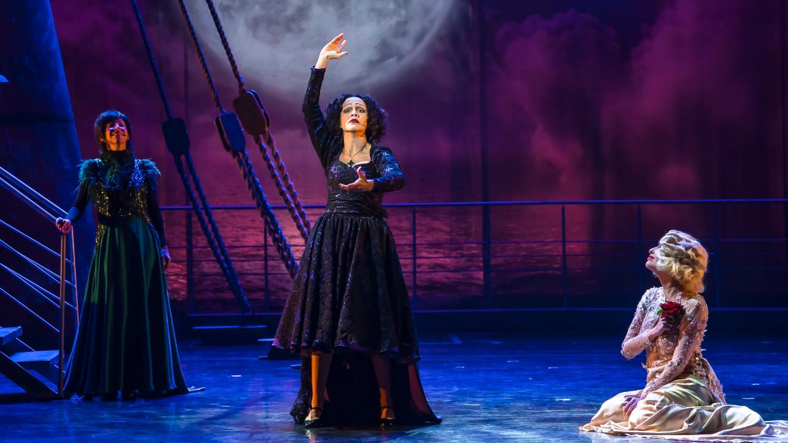

“Território do Amor” chega a Campinas com musical inspirado em grandes vozes femininas

Com texto de Gabriel Chalita e direção de José Possi Neto, espetáculo fica em cartaz no Centro de Convivência Cultural Carlos Gomes de 23 de julho a 2 de agosto
Depois de estrear em São Paulo em 2025, “Território do Amor” chega a Campinas para uma curta temporada no Centro de Convivência Cultural Carlos Gomes, na Sala de Espetáculos Luís Otávio Burnier. O musical será apresentado de 23 de julho a 2 de agosto, com sessões de quinta a sábado, às 19h, e aos domingos, às 18h.
Com texto de Gabriel Chalita, encenação e direção de arte de José Possi Neto e direção musical de Daniel Rocha, o espetáculo parte de canções associadas a grandes intérpretes femininas da música mundial para construir uma reflexão cênica sobre o amor, suas contradições e permanências.
A montagem reúne, em uma mesma travessia imaginária, nomes como Elizeth Cardoso, Maysa, Dalva de Oliveira, Dolores Duran, Maria Callas, Barbara, Edith Piaf, Mercedes Sosa e Marlene Dietrich. Em cena, essas artistas aparecem como figuras que, em diferentes épocas, línguas e contextos, cantaram experiências ligadas ao desejo, à perda, à espera, à paixão e à memória.
Na dramaturgia, todas estão em uma embarcação conduzida por um barqueiro, em uma atmosfera onírica e fora do tempo real. O destino da viagem permanece incerto, enquanto as personagens cantam e narram seus amores a partir de repertórios que atravessaram gerações.
Para Gabriel Chalita, o grande personagem do espetáculo é o próprio amor. “Essas mulheres fascinantes — tanto as brasileiras como as de outras línguas — surgem para serem ao mesmo tempo servas e senhoras do amor. E, graças ao jogo dramático, nós questionamos: para onde elas estariam indo? Para onde vamos quando o amor nos encontra?”, afirma o autor.
No elenco, Aline Serra interpreta Dolores Duran; Badu Morais, Elizeth Cardoso; Bianca Tadini, Maria Callas; Daniela Cury, Barbara; Fernanda Biancamano, Edith Piaf; Letícia Mamede, Dalva de Oliveira; Maria Clara Manesco, Marlene Dietrich; Neusa Romano, Maysa; e Tatiana Toyota, Mercedes Sosa. O barqueiro é vivido por Elton Towersey.
O elenco conta ainda com Anna Preto, como swing, e com coro formado por Gabriela Lira, Luciana Lira, Barbara Viana, Duda Garcez, Gabriela Evaristo e Gabrielly Neves.
A encenação de José Possi Neto aposta em uma atmosfera onírica para reunir artistas que, na vida real, pertenceram a tempos, países e trajetórias diferentes. Em vez de organizar uma biografia tradicional de cada cantora, o espetáculo trabalha com a memória das canções e com os estados emocionais que elas evocam.
“A escrita do Gabriel Chalita é poética e não obedece aos cânones e à dramaturgia da Broadway. Isso nos dá uma grande liberdade para tradução visual e estética do espetáculo”, afirma Possi Neto.
A direção musical de Daniel Rocha também parte da diversidade de estilos ligados às intérpretes homenageadas. O repertório atravessa universos como a música de câmara, o samba-canção, o choro, a marcha-rancho, o tango, a canção francesa e outros registros populares e eruditos.
Para dar conta dessa variedade, a montagem conta com uma banda de multi-instrumentistas e arranjos que buscam aproximar canções de diferentes lugares sem apagar suas identidades musicais. “Temos desde o universo sinfônico de câmara ao samba-canção, ao chorinho e à marcha-rancho do carnaval do início do século 20”, explica Daniel Rocha.
O espetáculo tem coreografia e direção de movimento de Kátia Barros, figurinos de Kleber Montanheiro, cenografia de Renato Theobaldo, desenho de som de Eduardo Pinheiro, desenho de luz de Wagner Freire e visagismo de Emi Sato e Alisson Rodrigues.
Ao reunir cantoras de diferentes países e gerações, “Território do Amor” propõe menos uma narrativa histórica sobre suas vidas e mais um encontro simbólico entre repertórios. Em cena, o amor aparece como tema musical, experiência íntima e força que atravessa tanto a celebração quanto a dor.
Serviço
Território do Amor
Texto: Gabriel Chalita
Encenação e direção de arte: José Possi Neto
Direção musical, arranjos e composições adicionais: Daniel Rocha
Coreografia e direção de movimento: Kátia Barros
Diretora residente: Zuba Janaína
Direção de produção: Marilia Toledo e Emilio Boechat
Elenco: Aline Serra, Anna Preto, Badu Morais, Bianca Tadini, Daniela Cury, Elton Towersey, Fernanda Biancamano, Letícia Mamede, Maria Clara Manesco, Neusa Romano, Tatiana Toyota, Luciana Lira, Gabriela Lira e Barbara Viana
Coro: Gabriela Lira, Luciana Lira, Barbara Viana, Duda Garcez, Gabriela Evaristo e Gabrielly Neves
Temporada: de 23 de julho a 2 de agosto de 2026
Local: Centro de Convivência Cultural Carlos Gomes — Sala de Espetáculos Luís Otávio BurnierCidade: Campinas, São Paulo
Sessões:Quintas, sextas e sábados, às 19hDomingos, às 18h
Ingressos: a partir de R$ 25
Vendas: Sympla
Duração: 2h15, com 15 minutos de intervalo
Classificação indicativa: livre
Capacidade: 529 lugares
Acessibilidade: física, Libras e audiodescrição